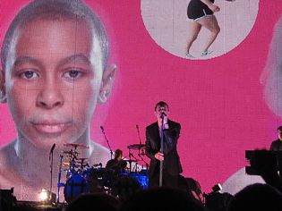

Концерт Depeche Mode
В это воскресенье, 4 ноября, в Internet Cafe состоялась трансляция концерта легендарной
группы Depeche Mode.
В рамках шастрольного тура по странам Европы и мира "Tour Of The Universe" Depeche
Mode дали концерт в Киеве.
Два момента проходят красной нитью в любом из отзывов - первый это недовольство звуком и вообще организауией, и второй - беспредельный фанатский восторг от увиденного, эмоции слезы и все сопутствующее моменту. Это первый приезд DM в Украину после стольких лет ожидания.
 Группа разогрева начала играть как и было запланировано в 19:30 при полупустом зале. В это время снаружи, на улице многотысячная толпа атаковала наружное оцепление и входные двери, в надежде попасть таки внутрь. Разогревающие Nitzer Ebb за полчаса своего выступления порадовали публику лишь под конец - во время ухода со сцены. А через полчаса томительного ожидания на сцену вышли Depeche Mode
Отхывы жж-пользоватей, посетивших концерт.
-"Дейв был потрясающий. Одним движением своей руки он заставлял всех реветь от восторга. Уже молчу про его легендарные танцы и движения. Кстати, кто-то кинул на сцену букет роз, в позже Дейв его кому-то тоже кинул мне даже страшно представить что там случилось после))"